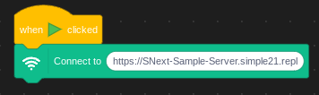
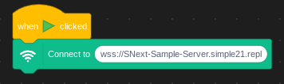

I'm sure at one point or another devs have ran into the issue of trying to write a game with cloud multiplayer only to see the limits of Scratch. 10 Cloud Variable simple will not suffice and although SN0Edit supports infinite variables having a service you can control for your cloud multiplayer thats also faster is a great bonus.
To start using SNConnect you'll need to add it to your project. Start by copying This Link and loading up SN-Edit.. Find the extension menu at the bottom right of your screen then scroll all the way down until you see "Custom Extension". Click that and paste the link when prompted. Return back to your project and you should see SNC is installed.
Despite how easy it is to add the extension to your project, you're not done just yet. You'll need to create your server. Create a Replit account and fork This Repl. Give it a name and then wait for it to load. Once it does press "Run". A Webview window should come up on the right with a link. Copy that link. We'll need it later.
This part is pretty straight forward. Paste your link into the "Connect To" block
Then replace the https part of the link wss.
